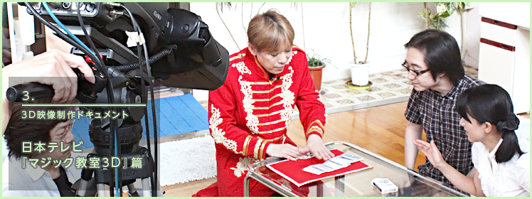
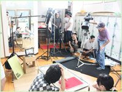
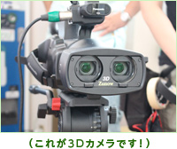
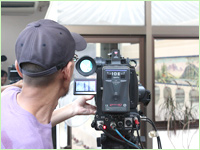
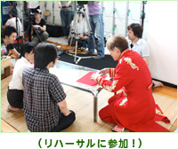
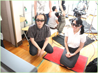
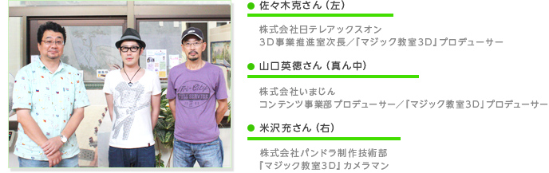
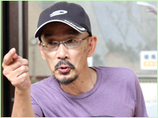

ここは東京・中野区にある温泉ランド「昭和浴場」。住宅街の真ん中にある、昔ながらの情緒あふれる銭湯です。
『マジック教室3D』の映像収録のはずなのに、マジックと銭湯に何の関係が！？
『マジック教室3D』の映像収録のはずなのに、マジックと銭湯に何の関係が！？
あっけにとられているN.O.M取材陣を尻目に、映像制作スタッフのみなさんは、脱衣所で黙々とセッティングの作業を進められています。なんだかシュールな光景です。
実はこの銭湯、今回の収録で出演されるマジシャンであるタジマジックさんが経営されているとのことで、専属の「銭湯マジシャン」として、ここでマジックショーも披露されているそうです。と、説明されても、まだ狐につままれたような感覚です。

使われているカメラを見せていただきました。レンズがふたつついていて、同時にふたつの映像を撮影できるようになっています。これが同時に映し出されることで、立体的に見えるというわけです。

カメラのチェックをされています。ニンテンドー3DSで実際に見たときに、違和感なくクッキリ立体的に見えるよう、カメラの位置を変えたり、つまみを動かしたり、真剣そのものです。でも、やっぱりシュールな光景です。
3D収録現場、しかも銭湯という特殊な撮影環境の物珍しさに浮き足立っているわれわれに、スタッフさんから「実際にリハーサルを体験されたらどうですか？」とのお声が。

なんと、タジマジックさんがマジックを実演されるリハーサルを、出演者の女性アシスタントの方の位置から見せていただくことに。いきなりのお話で超緊張！
タジマジックさんは本番同様に、トランプを使ったすごいマジックを次々と披露されます。リハーサルとはいえ実際に撮影されるので、ひとつのマジックが終わるごとに、制作スタッフさんからいろいろな指示が飛びます。

それにしても、マジックには驚きのヒトコト。もちろん、タネも仕掛けも、まったくわかりません。さらに、極度の緊張と驚きで、言葉につまってしまっていたわれわれの姿に、制作スタッフのみなさんからは「リアクションが薄いですね〜」と突っ込みが。そういうプロじゃないのでご勘弁を！
リハーサルが終わったら、専用のゴーグルをつけて、3Dモニターでチェックします。さきほど目の前で見たマジックが、臨場感もそのままに、3Dで映し出されていました。タジマジックさんの実際のマジックは、この9月に配信予定です。ニンテンドー3DSで『マジック教室3D』を、ぜひ見てみてください！


――
これまで3D撮影のご経験は？
米沢
テストでやったことはありますが、番組を制作するという形では、私は初めてでした。
――
3D撮影は、技術的に通常の撮影とどう違うんでしょうか？
米沢
まず最初に基準になる位置を決めます。そこより手前の部分は飛び出して見えるし、そこより向こうの部分は奥にあるように見えるわけです。最近の3Dは奥行き重視なので、飛び出しはあまりきつくしない。ニンテンドー3DSの場合も、飛び出しと奥行きはそれぞれ何パーセントと決まっていますので、それに合うように調整します。

――
さきほど3Dモニターに定規を当てて何か測っていらっしゃいましたよね。計算機で何か計算もされていましたが。
米沢
モニターには左目用と右目用の絵がずれて表示されますよね。そのズレを測って、テレビの横幅に対して何パーセントかを計算しているんです。それで、これは奥行きが強すぎるから、もう少し手前に置こうとか、カメラの位置を変えたりするわけです。あんまり飛び出しや奥行きを強くし過ぎると気持ち悪い感じになっちゃうので、ちょうどいいあんばいになるように。
今回のような室内ロケや、パルト小石さんが経営されているバーでの撮影はいいんですが、屋外で遠くにあるものが映り込むと、そのまま撮影することはできません。そういう部分が、いちばん難しいところですね。
今回のような室内ロケや、パルト小石さんが経営されているバーでの撮影はいいんですが、屋外で遠くにあるものが映り込むと、そのまま撮影することはできません。そういう部分が、いちばん難しいところですね。
――
今回『いつの間にテレビ』にマジックという題材を選ばれた理由は？
山口
まずネタの多さですね。とにかくいっぱいあるだろうと。その中でナポレオンズさんにお願いしました。またニンテンドー3DSのユーザーという視聴者層も考えて、お子さんがマジックの解説を見て、学校で実際に友だちにマジックを見せるといったことを想定しました。20代や30代の方にも楽しんでいただけるよう、今回のようなスペシャル的なものも間に入れて、たとえば1年間の番組をバランスよく構成できるんじゃないかなと。あとハトやトランプが立体的に見えるという3Dならではというところも、もちろんあります。
――
収録を重ねてきて、その場で「こうしよう！」ということは？
米沢
そういうのはよくありますね。最初の頃はナポレオンズのおふたりが横に並んでたんですが、少し角度をつけたりとか。
山口
CGだと立体感が出しやすくて見た目も派手になるので、背景をCGにしたり、テロップを出したりとかもやってます。むしろCGは比較的やりやすくて、今回みたいなロケの方がいろいろ大変ですね。
米沢
撮影ではアップがいちばん難しいですね。ニンテンドー3DSは画面が小さいので、できるだけカメラを寄せたいんですが、寄れば寄るほど距離の調整がデリケートになるんです。トランプをこういう風に持ってくださいとか注文も多くなってきますし。ネタによっては「ゴメンナサイ」なこともあるんで、そこはナポレオンズさんも大変だと思います。
――
ニンテンドー3DSで実際に配信されたものをご覧になって、どう思われましたか？
米沢
撮影時に3Dモニターでチェックはしていますが、もうちょっと奥行きをつけてもよかったなとか。
――
やはり制作側なので、チェック的な視点で見られるんですね。
山口
初回はちょっと苦労したんで、報われたかなというのはありますが、あそこは直さないとみたいな。
佐々木
最初のうちは大人しかったんですよね。3Dモニターと3DSでは見た目の印象が少し違ったので。3DSでは、もっと立体感をつけていいんじゃないかと。
米沢
回を追うごとに、だんだん3Dの度合いが強くなっていきましたよね（笑）。
――
視聴者としても、マジックの臨場感がよりハッキリ伝わってくるようになってきていると思います。
佐々木
われわれもこれまで3Dの番組は1年くらいやっていたんですが、3.5インチの（ニンテンドー3DSの）画面というのは初めてだったもので。ちょうどいいところが制作をしながらわかってきたなというところです。
――
最後に読者のみなさんにメッセージを。
山口
ゲームの合間などに、気軽に観ていただけるとうれしいです。また、これから3Dコンテンツが広まるきっかけになればいいなと思います。
佐々木
この『マジック教室3D』も含めて『いつの間にテレビ』で配信している3つの番組や、日本テレビの番組など、バラバラに独立した番組としてではなく、コラボレーションしていくことも考えています。新しい番組も今、準備しているところです。今後も発展させていくので楽しみにしていただければと思います。
最初は「フーン」って半信半疑なところがあったんですが、3Dになっただけでマジックのライブ感がすごくて驚きました。ただトランプが52枚あるだけでも、厚みがわかりますからね。今までテレビだとライブに比べるとイマイチ興奮度が下がるなと思っていたんですよ。だから「これだ！」って。プロのマジシャンになって34年目なんですが、ようやく巡り会えたなと。もう燃え尽きかけてるんで、あとちょっと早ければよかったのに（笑）。
ツイッターとかフェイスブックなんかで「毎日マジックを紹介してネタはなくならないんですか？」って心配されるんですが、ぼくらのマジックは質を問わないんで（笑）。長いこと「量こそ命」で勝負してますから大丈夫です。
あと「タネ明かししちゃって大丈夫ですか？」とも聞かれるんですが、ぼくらは2度おいしいと思ってるんです。マジックで驚いてもらって、タネ明かしでも驚いてもらう。「なんでこんなことでダマされちゃうんだろう？」と。それに、タネ明かしをしても、次にちょっとアレンジすると、またダマされちゃう。だから心理合戦ですよね。
タネが見えちゃうというのはテレビでもあるんですが、3Dだとまた違う見え方になるんで、収録は戦いですね。こう見えても大変なんです（笑）。カメラの距離とかトランプを見せる位置とか、普段よりデリケートな撮影という部分もあります。
以前、任天堂さん提供のテレビ番組で司会をやらせていただいたんですが、昔からトランプを作っておられる会社さんですし、本当にお詳しいので、ヘタなことはできません（笑）。これからもよろしくお願いします。
あと「タネ明かししちゃって大丈夫ですか？」とも聞かれるんですが、ぼくらは2度おいしいと思ってるんです。マジックで驚いてもらって、タネ明かしでも驚いてもらう。「なんでこんなことでダマされちゃうんだろう？」と。それに、タネ明かしをしても、次にちょっとアレンジすると、またダマされちゃう。だから心理合戦ですよね。
タネが見えちゃうというのはテレビでもあるんですが、3Dだとまた違う見え方になるんで、収録は戦いですね。こう見えても大変なんです（笑）。カメラの距離とかトランプを見せる位置とか、普段よりデリケートな撮影という部分もあります。
以前、任天堂さん提供のテレビ番組で司会をやらせていただいたんですが、昔からトランプを作っておられる会社さんですし、本当にお詳しいので、ヘタなことはできません（笑）。これからもよろしくお願いします。
今回はナポレオンズさんのご紹介で番組に出演させていただきました。この銭湯は、ぼくが3代目でして、マジックも元々やっていたんですが、父親が亡くなってからは、マジックと銭湯を両立させたいということで「銭湯マジシャン」としてやっています（笑）。今のご時世なかなか銭湯というのも厳しいんですけど、ぼくの代でつぶしたくはないので、銭湯のサービスの一環としてマジックもお見せしようと。

多いときはここで1日5回くらいマジックショーをやっていますよ。マジシャンとしての営業もやってまして、きのうも朝3時までマジックの営業をやって、きょうも15時から番台に乗ります。もうオッサンなんで大変ですが（笑）。
きょうは3Dというところと、番組の長さのこともありますんで、ちょうどいい感じのネタを考えて選んでみました。持ちネタは3,000種類くらいあるんで、もっとすごいのもあるんですが、あんまりすごすぎるとリアクションがサクラっぽく見えちゃうんで（笑）。
ぼく自身はアナログ人間なんですが、パソコンとかではなく、ニンテンドー3DSで見られるということで。ナポレオンズさんのは見させていただいたんですが、本当に立体感がすごいですよね。何か怪しいなと感じるところとか、目の前でやっているような臨場感がすごくあって。ぜひニンテンドー3DSで、きょうの収録分も見たいなと思っています。
きょうは3Dというところと、番組の長さのこともありますんで、ちょうどいい感じのネタを考えて選んでみました。持ちネタは3,000種類くらいあるんで、もっとすごいのもあるんですが、あんまりすごすぎるとリアクションがサクラっぽく見えちゃうんで（笑）。
ぼく自身はアナログ人間なんですが、パソコンとかではなく、ニンテンドー3DSで見られるということで。ナポレオンズさんのは見させていただいたんですが、本当に立体感がすごいですよね。何か怪しいなと感じるところとか、目の前でやっているような臨場感がすごくあって。ぜひニンテンドー3DSで、きょうの収録分も見たいなと思っています。